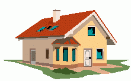
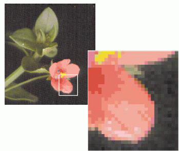
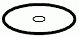
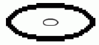

Grafický editor je program pro tvorbu a úpravy grafických
dokumentov, teda dokumentov s obrázkami - fotografie, loga, nápisy, kresby. Existujú však
dva základné principy zaznamenávania obrazu počítačom – vektorový a bitmapový.
Rozdiel mezi nimi je taký veľký, že väčšina grafických editorů se špecializuje len na jeden z nich,
pričomž s tým druhým formátom dokáže len to nejnutnejšie – obyčajne prečítať a umiestniť do
dokumentu, alebo zmenšiť či zväčšiť. Zoner Callisto 4 je vektorový grafický editor.
Poskytuje široké možnosti práce s vektorovými formátmi a základné s bimapovými
- Vektorový formát
- vycháza z matematického popisu plošných útvarov, tedy z geometrie. Chápe obrázok ako koláž objektov
(čiar, textov, plôch ...), ktorých dáta si počítač pamätá. Pri vykreslovaní počítať tieto dáta prepočítava.
Vďaka tomu je kvalita zobrazenia stále rovnako vysoká nezávisle na zväčšení merítka a bez velkých nároků
na velikost souboru.
- Bitmapový formát
- 
Chápe obrázok ako mozaiku bodov, tzv. bitovú mapu (tiež raster) kde každý bod, je
určený svojou pozíciou a farbou. Počítač si musí pamätať tieto informacie pre každý bod,
co ovlivňuje velkosť dátového súboru úmerne s veľkosťou obrázku. Pokiaľ je obrázek uložený
v menšom rozlíšení (tzn. s menšími rozmermi) a zväčšíme ho, značne tým utrpí kvalita zobrazenia.
Názorne ukazuje rozdiel v zobrazení vektorového obrázku a bitovej mapy pri zväčšení nasledujúcí obrázok
(vľavo je obrázok vo vektorovom formáte, vpravo v bitmapovom, vnútorný ovál je ukážkou pôvodných rozmerov):
 
Hlavné rozdiely oproti rastrovým obrázkom
- Vektorový obrázok si pamätá postupnosť kreslenia objektov, objekt je definovaný akciami a nie bodmi.
- Veľkosť súboru neovplyvňuje velkosť obrázka ale jeho "zložitosť"
- Pri zmene velkosti veľkosti sa obrázok "nekazí".
- Obrázok sa skladá z vrstiev a tie možno prehadzovať.
- Vložené objekty možno hocikedy meniť (aj tie zakryté)
- Do plochy nemožno vlievať farbu, ako sme to poznali pri rastrových obr.
Výplň majú len uzavreté objekty (nie plochy)